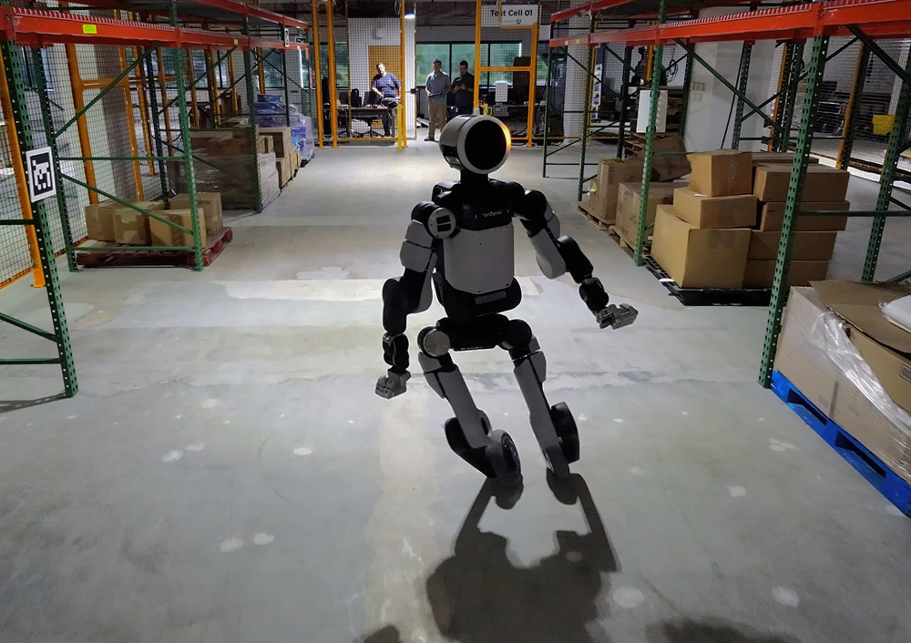
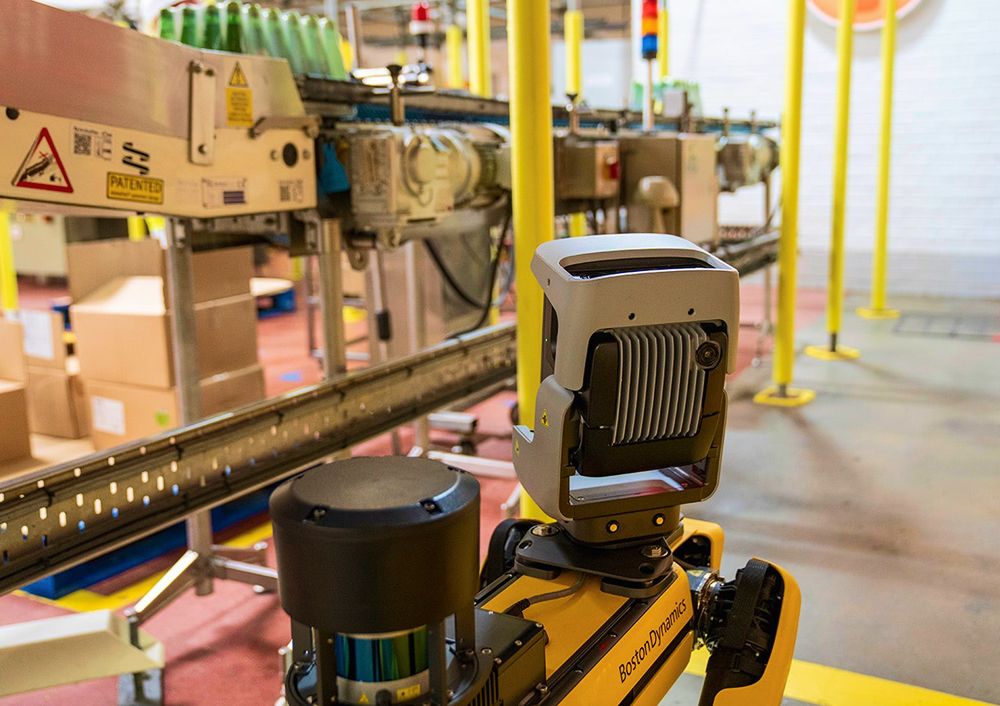
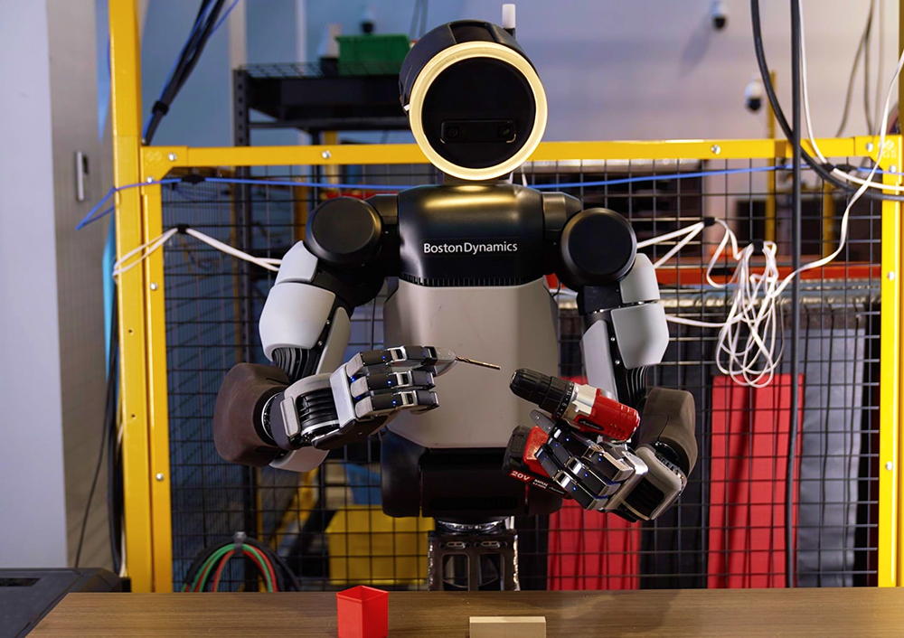
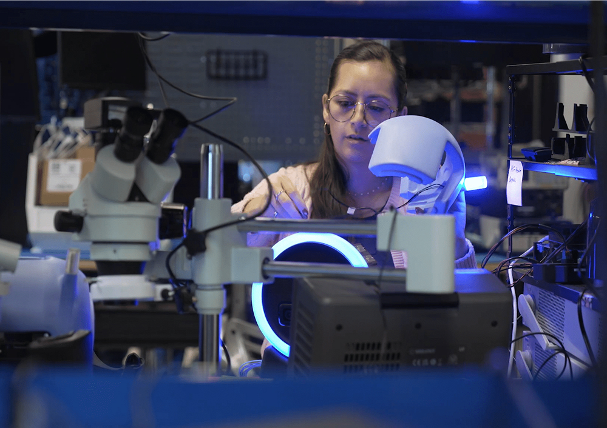
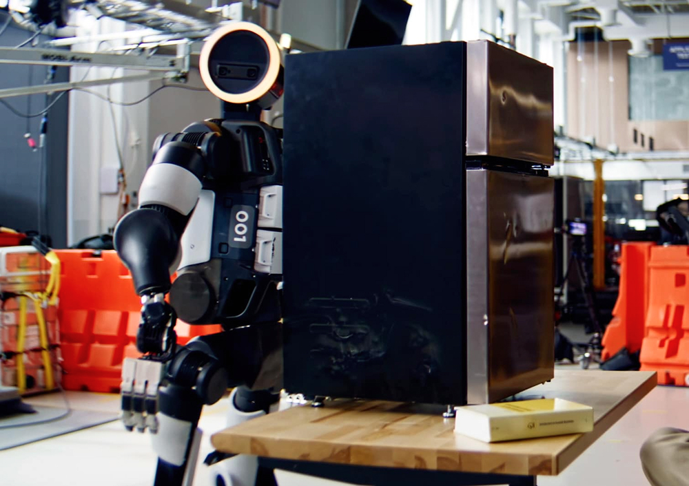

Media
Boston Dynamics Stories
YOUTUBE
Join our team inside the lab to discover the latest updates, hear directly from our roboticists, and see our robots in action.
The To Do List with Spot
Spot uses Google's Gemini Robotics-ER 1.5 to understand its surroundings and perform everyday tasks with AI-powered reasoning.
Atlas | Product Features
This short video introduces some of the high level futures of the production version of our Atlas robot.
Happy Holidays from Boston Dynamics
Happy Holidays from Boston Dynamics! Atlas and Spot are being teleoperated in this vintage holiday vignette.
Spot at Ash Grove Cement
Ash Grove Cement, a CRH Company, has employed Spot to help boost efficiency and safety during site inspections in their Seattle Plant.
BLOGS
Stay up-to-date on the latest robotics trends and industry insights from the Boston Dynamics blog.
-

- Atlas On a Roll
- Atlas uses reinforcement learning to master dynamic movements on wheels, expanding its robotic capabilities.
-

- The Missing Piece of Your AI Stack
- Spot 5.2 connects enterprise systems and autonomous robots for smarter, facility-wide automation.
-

- Robot Hands for Modern AI and Real Work
- Atlas' 13-DOF hands combine precision, strength, and dexterity to handle tools and perform complex industrial tasks.
-

- Ask a Roboticist: Meet Taylo
- Taylor Frey-Baker shares insights into Atlas' design, sensing technology, and the engineering behind its robotic intelligence.
-

- Training a Humanoid Robot for Hard Work
- Atlas uses AI-driven movements to handle heavy objects and perform complex tasks with precision and reliability.